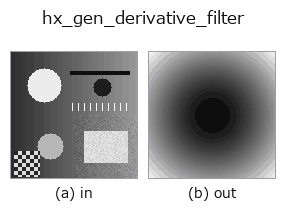

halcon_ext op• Data kinds: image → image
• Call: fullseye.apply(img, "hx_gen_derivative_filter", a=0.5, b=0.5) (2-D model = एक image + दो scalar knobs a,b∈[0,1])
• HALCON समकक्ष: gen_derivative_filter (अर्थ और parameters समझने के लिए HALCON reference उपयोगी है)

*Figure synthetic 128×128 input पर सच में चलाकर मिला output है। बाईं ओर input, दाईं ओर output। Point clouds ऊपर से देखे गए scatter के रूप में (brightness = z), 1-D series line के रूप में, volumes z दिशा में maximum-intensity projection के रूप में, videos बीच के frame के रूप में, complex images amplitude के रूप में, और जो return values चित्र नहीं बन सकते वे स्वयं values के रूप में दिखाए जाते हैं।*
Knob a को बदलकर (0.1 / 0.5 / 0.9, दूसरा knob default पर):
▸ hx_gen_derivative_filter: knob a को बदलने का figure (docs site)
Knob b को बदलकर (0.1 / 0.5 / 0.9, दूसरा knob default पर):
▸ hx_gen_derivative_filter: knob b को बदलने का figure (docs site)
दूसरी images पर भी (synthetic scene / photo / coins। ऊपर की row में inputs, नीचे की row में उनके outputs। Knobs default पर):
▸ hx_gen_derivative_filter: दूसरी images पर output (docs site)
*चौथा column colour (H,W,3) input है। यह op channels को पार किए बिना colour संभालता है (colour channel को तीसरे spatial axis की तरह convolve नहीं करता)।*
Frequency domain का derivative filter। a derivative का क्रम है, b दिशा है।
HALCON का gen_derivative_filter Derivative (x / y / xx / yy / xy) और order लेता है, पर यहाँ लंबे समय तक यह केवल |f| को normalise करके लौटाता था, न input की सामग्री देखता था, न knobs को बिल्कुल —— 2026-09-02 के माप में, shape समान हो तो a/b बदलने पर भी, दूसरी तस्वीर देने पर भी, परिणाम byte-दर-byte समान था (sibling hx_gen_lowpass / hx_gen_highpass / hx_gen_bandfilter knobs से बदलते हैं, इसलिए केवल यही 1 अलग दिखता था)।
• a : order 1 से 2 (|f| या |f|^2)। order 2 Laplacian के अनुरूप है।
• b : दिशा। 0 पर x दिशा |f_x|, 1 पर y दिशा |f_y|, और बीच में isotropic |f| की ओर smooth रूप से मिलाया जाता है (0.5 पर ठीक isotropic)।
परिणाम frequency domain में filter स्वयं है (HALCON के gen_* जैसी ही परिपाटी), इसलिए input का उपयोग केवल shape तय करने के लिए होता है। पर अब यह केवल shape से नहीं, knobs से भी सचमुच बदलता है, इसलिए evolution order और दिशा चुन सकता है।
Values की तुलना (मापा गया): output को उसी image के अधिकतम से normalise किया गया है (output का अधिकतम हमेशा 1.0 होता है, और input को किसी constant से गुणा करने पर भी output नहीं बदलता)। इसलिए अलग-अलग images के values की तुलना नहीं की जा सकती — समान ताकत वाले feature का value भी इस पर निर्भर करता है कि उस image में सबसे मज़बूत feature कौन-सा है। केवल कमज़ोर features वाली image में noise 1.0 तक उठ जाता है। images के बीच तुलना करनी हो तो किसी साझा reference से फिर से भाग दें।
• gallery2d_halcon_ext family guide
• Sample data catalog (DL URL / license) — 2-D के लिए skimage.data (BSD/public) + synthetic, 3-D के लिए real data sources (Stanford/PDS आदि) के DL URL।
• Operators का स्रोत और संदर्भ — इस op family के मूल research/methods के स्रोत।
• Algorithm का मानक स्रोत (लेखक, वर्ष) और उपयोग ऊपर की family usage guide में दिए गए हैं।
नीचे का program सच में चलता है, यह जाँचा गया है (figure वाला ही input)। Studio की help में यह block buttons बन जाता है, जिनसे इसे वहीं load करके चलाया जा सकता है।
hx_gen_derivative_filter 0.50 0.50
▸ यह pipeline load करें · Load करके चलाएँ
• gallery2d_halcon_ext — py -3.11 examples/gallery2d_halcon_ext.py
image को input के रूप में लेते हैं)identity · gaussian · mean_box · bilateral · unsharp · median · min_filter · max_filter
halcon_ext)hx_gen_circle · hx_gen_ellipse · hx_gen_rectangle2 · hx_gen_checker_region · hx_gen_grid_region · hx_gabor · hx_fit_surface1 · hx_fit_surface2
*Provenance: ops.py — 2D operator registry. यह per-op note tools/opdocs.py md से अपने-आप generate होता है (हाथ से edit न करें)।*
© 2026 Kazufumi Furuse — Fullseye operator documentation. Licensed under Apache-2.0.